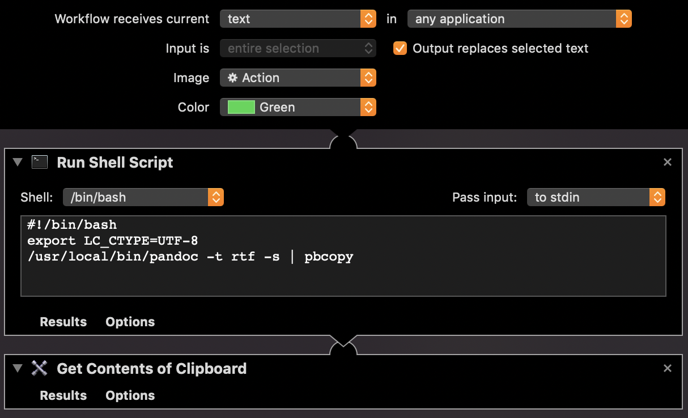
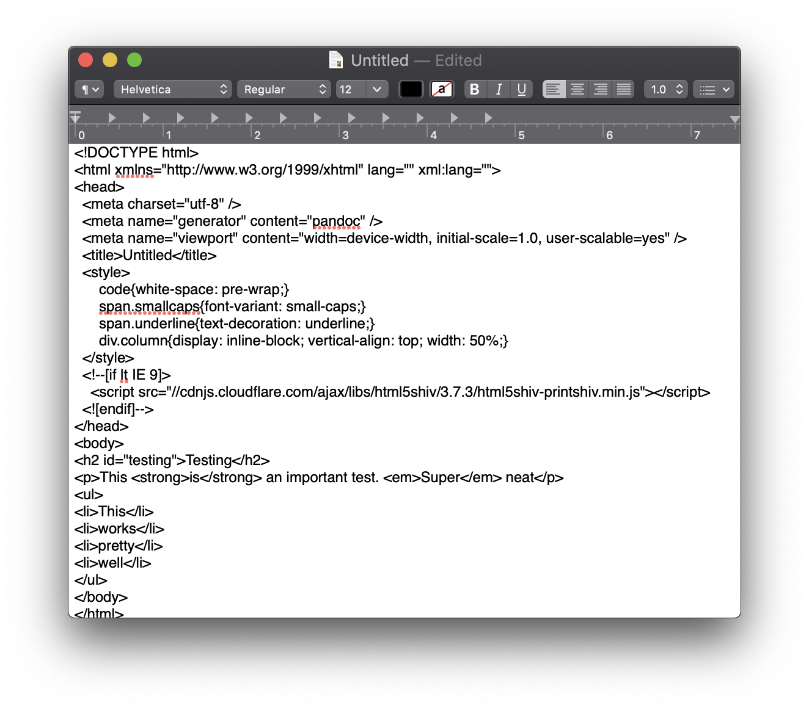
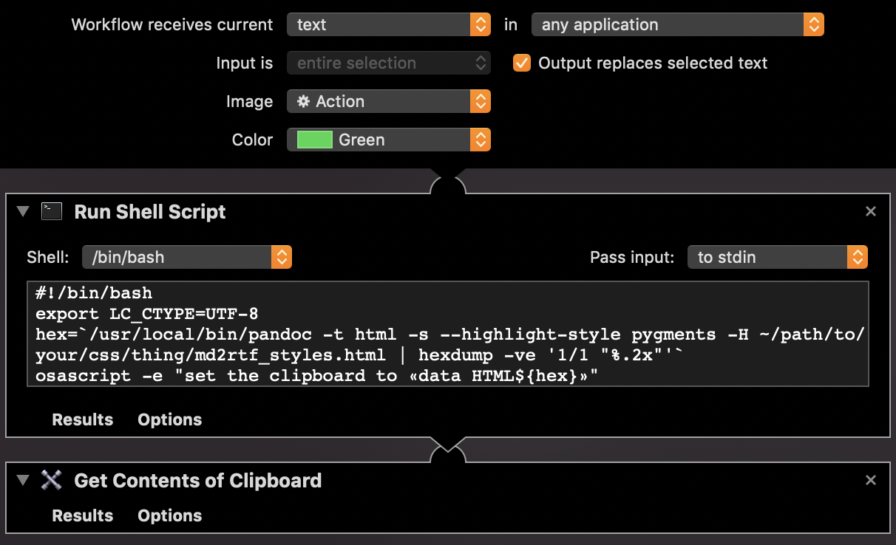

Convert Markdown to rich text (with syntax highlighting!) in any macOS app
GSU uses Microsoft’s Office365 for e-mail, which is fine. My previous institutions—Duke and BYU—both use it too, and it’s pretty standard. GSU also enforces 2-factor authentication (2FA) with Duo, which is also fine. Everybody should use some sort of 2FA for all their important accounts!
However, for whatever reason, GSU’s version of Duo’s 2FA doesn’t allow you to generate app-specific passwords for things like e-mail. Instead, any e-mail client I use has to have support for Microsoft’s special Modern Authentication system, which opens up a popup window to handle the 2FA and logging in and everything. The issue with this is that very few e-mail clients support Modern Authentication. In the macOS world, the only program that supports it is Apple Mail. That’s all.
This means I’ve had to move away from my favorite e-mail client ever: Airmail. Airmail is fast, looks nice, and has great search features. Most importantly for me, though, is that it let you write e-mails in Markdown and then converted the Markdown text to HTML when you clicked send. This is the coolest thing ever if you use Markdown everywhere normally, but it’s even better when teaching code-heavy classes. I could respond to student questions by typing stuff like:
Oh, I see! You have an error in the 3rd line there. Try changing it to:
```r
ggplot(mtcars, aes(x = wt, y = mpg)) +
geom_point() +
theme_bw()
```
…and Airmail would convert that to nicely formatted HTML. So convenient!
Apple Mail can’t do this.
However, through the magic of macOS services, Bash scripting, and AppleScript, I’ve found a way to convert Markdown text to richly formatted text, and it’s delightful!
Here’s how to do it.
macOS services
macOS comes with Automator, a program that lets you create workflows for repeated tasks. One kind of workflow is called a Service (or Quick Action), which can take text (or a file), do stuff to it, and spit out new text. Here’s a super basic example that takes selected text, converts it to uppercase with the tr bash command, copies it to the system-wide clipboard using the pbcopy shell script, gets the contents of the clipboard, and then replaces the selected text:

If you save this as a Quick Action, macOS will put it in a folder named ~/Library/Services. Once it’s there, it’ll be accessible in any program that lets you type, like TextEdit or Mail. Type some text in TextEdit, select it, and go to the TextEdit → Services menu. You should see the “Make uppercase” service. If you click on it, your text will be converted to uppercase. Magic.

You can make these easier to run by assigning them keyboard shortcuts. Go to System Preferences → Keyboard → Shortcuts → Services, scroll down the list until you find the “Make uppercase” service, and add a shortcut for it. Now you can convert text to upper case in any application by selecting it and pressing the keyboard shortcut. Super magic.

Markdown to RTF, basic
Rather than converting text to uppercase, we can make a service that pipes Markdown text through pandoc, converts it to nicely styled RTF, and replaces the selected text with the nicely styled text.
Make a new Quick Action in Automator that looks like this (I named it md2rtf):

The shell script should look like this:
# !/bin/bash
export LC_CTYPE=UTF-8
/usr/local/bin/pandoc -t rtf -s | pbcopy
This will run your text through pandoc, convert it to RTF, and copy the results to the clipboard. The “Get Contents of Clipboard” will then grab the formatted text from the clipboard and replace the selected text with it.
Watch it in action here:
With this service, I can type in Markdown in Mail, convert it all to rich text, and then send, which is really convenient!
Markdown to RTF, with syntax highlighting
However, it’s not quite perfect. RTF doesn’t support syntax highlighting, so if I convert any code, it’ll format it in monospaced Courier font (which is good!) that is just plain black (which is less good!). HTML output does support syntax highlighting, though, so it’d be nice if there was a way to take Markdown text and replace it with converted HTML.
Just changing the pandoc script to /usr/local/bin/pandoc -t html -s | pbcopy won’t work, though. It’ll convert the file to HTML, as expected, but it’ll replace your text with all the HTML tags instead of rendered HTML, which is less than ideal.

So instead, we need to convert to HTML, somehow render that HTML to rich text, and then replace the text with that instead. Fortunately someone asked a similar question on StackOverflow in 2012, and there’s a solution we can adapt! We basically convert HTML to raw hex code, then convert the hex code to HTML with AppleScript, which renders the HTML correctly. It seems (and is) convoluted, but it works!
Change the shell script in the Automator workflow to this:
# !/bin/bash
export LC_CTYPE=UTF-8
hex=`/usr/local/bin/pandoc -t html -s --highlight-style pygments | hexdump -ve '1/1 "%.2x"'`
osascript -e "set the clipboard to «data HTML${hex}»"

This will take the selected text, convert it to HTML, convert the raw HTML to hex codes, convert the hex code to rendered HTML, and replace the selected text with that.
Here’s what it looks like:
This is almost perfect! The only minor issue is that the non-code text switched from Helvetica (TextEdit’s and Apple Mail’s default) to Times New Roman, which isn’t great. It’d be fantastic if the converted HTML used Helvetica instead of Times.
Fortunately there’s a way to fix that. The text is getting converted to Times because the rendered HTML defaults to Times in the absence of any CSS styles telling it to be something else. If we can insert some custom CSS into the converted HTML file with pandoc, we should be able to get the correct font.
There’s an argument for pandoc that lets you insert files into the head of the HTML, -H. (There’s also a --css argument, but it doesn’t play well with standalone HTML files, so it’s easier to insert stuff directly into the converted HTML). Create an HTML file somewhere on your computer with this:
<style type="text/css">
body {
font-family: Helvetica, sans-serif;
}
</style>
(This isn’t raw CSS—it’s CSS wrapped in HTML. We have to do that because pandoc will take that whole file and insert it as HTML in the converted document, so we have to treat it as HTML.)
Change your Automator workflow one last time so that it injects the custom CSS:
# !/bin/bash
export LC_CTYPE=UTF-8
hex=`/usr/local/bin/pandoc -t html -s --highlight-style pygments -H ~/path/to/your/css/thing/md2rtf_styles.html | hexdump -ve '1/1 "%.2x"'`
osascript -e "set the clipboard to «data HTML${hex}»"

With that addition, the workflow will now take your selected text, convert it to HTML that is styled with Helvetica, convert that to hex code, convert that to rendered HTML, and finally replace your text with impeccable style:
I’ve added ⌘⌥^⇧P as the shortcut for this (so I essentially mash down the whole bottom left corner of my keyboard and hit P), and it makes using Apple Mail with Markdown and code quite convenient!